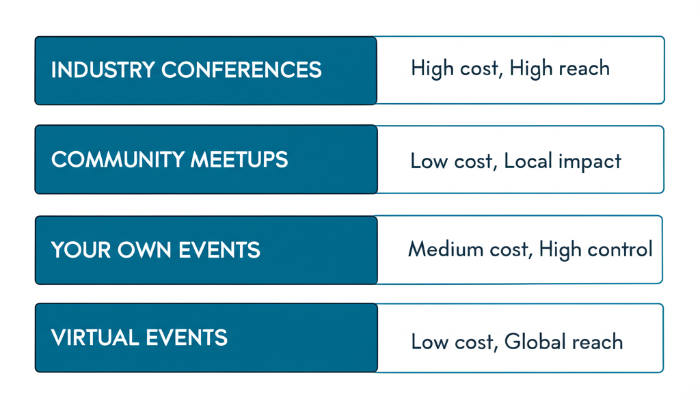

Part 1: Why Events Matter
The Value of In-Person
In developer marketing, events provide:
- Face-to-face trust building
- Deep product conversations
- Community relationship building
- Content opportunities (talks, recordings)
- Competitive intelligence
Event Types
- Industry conferences (KubeCon, AWS re:Invent)
- Community meetups (local tech meetups)
- Your own events (launch events, dinners)
- Partner events (co-hosted with complementary tools)
- Virtual events (webinars, online conferences)
Part 2: Conference Booth Strategy

Booth That Works
Key elements:
- Clear value prop visible from distance
- Interactive demo stations
- Swag with purpose (not junk)
- Knowledgeable staff
Interactive Demos
Best practice: Let developers actually use your product at the booth.
Set up:
- Quick demo flow (5-10 minutes max)
- Pre-configured environment
- Success moment they can achieve
- Follow-up capture
Booth Staff
Who should work the booth:
- Engineers who can go deep
- Marketers who can qualify
- Mix of personalities
Tips:
- Rotate to prevent burnout
- Brief on key messages
- Set lead capture goals
Part 3: Zero-Budget Conference Marketing
The Walking Billboard
Case study: "How I marketed to 2,000 prospects for ~$0"
Approach:
- Simple t-shirt with value prop + QR code
- Wear it, walk around
- Start conversations
Why it works:
- Being dramatically different > incrementally better
- Zero cost, high visibility
- Natural conversation starter
Custom Demos for Other Vendors
Tactic: Build awesome customized demos for other vendors' booths.
Process:
- Reach out to vendors before conference
- Offer to build demo that uses your product
- They get great demo content
- You get exposure
Results: One founder got 8/25 replies, 4 ended up doing it.
Custom Demos for Speakers
Same approach for speakers:
- Offer to build demo for their talk
- Their talk features your product naturally
- Higher credibility than booth
Part 4: Swag Strategy
Swag That Works
Principles:
- Useful > clever
- Connected to product > generic
- Quality > quantity
- Memorable > forgettable
Swag Ideas That Hit
Mechanical keyboard with branded key (Parabola):
- Replace Enter key with logo in brand colors
- Metaphorical: automation → execution
- Useful, memorable, shareable
Hand-iced cookies with product visuals:
- Custom cookies with charts from product
- Gives people excuse to share at work
- Triggers Slack conversations
Coconut water (Datafold):
- Unexpected
- Practical at hot conferences
- Memorable
The T-Shirt Formula
Developer t-shirts should be:
- Something they'd actually wear
- Not overly promotional
- Clever or technical reference
- Quality fabric
Swag Giveaway Campaigns
Big prize vs. many small prizes:
One big prize can get better ROI than many small ones.
NannyML example: Monitoring tool gave away monitoring setup.
- Went viral
- Connected to product value
- Worth talking about
Part 5: Conference Talks
Getting Talks Accepted
Key elements of good proposal:
- Clear, specific title
- What attendees will learn
- Why you're qualified
- Why it's timely
- Takeaways they can use
Talk Content
What works:
- Teaching something practical
- Sharing real experience (debugging story)
- Novel technical approach
- Behind-the-scenes of known systems
What doesn't work:
- Thinly veiled product pitches
- Too high-level/generic
- Already been done many times
Promoting Your Talk
Before:
- Share on social
- Tell your community
- Invite prospects personally
During:
- Live tweet key points
- Encourage attendee posts
After:
- Share slides
- Post recording when available
- Write blog post version
Part 6: Hosting Your Own Events
Small Exclusive Dinners
The case for small:
- 20-30 people
- Not recorded
- Super focused conversations
- Quality over quantity
The CTA: After the dinner, invite to community Slack.
Event Registration Promotion
Vercel approach: Put event registration CTA right in the header.
For super important events, the header is the most viewed part of the most visited page.
Launch Events
Supabase launch weeks: Condense announcements to create momentum and mindshare.
Elements:
- Multiple announcements throughout week
- Build to biggest reveal
- Community engagement throughout
Part 7: Virtual Events
Webinar Best Practices
Registration:
- Don't gate everything
- Simple form (name, email, company)
- Clear value in title
Content:
- Educational first
- Product demo natural, not forced
- Q&A time generous
Virtual Conference Presence
When sponsoring virtual events:
- Pre-record high-quality content
- Have team ready in chat
- Clear CTAs in sponsor content
- Follow up promptly
Part 8: Pre/Post Conference
Before the Conference
Outreach:
- Email customers/prospects who might attend
- Offer meetings at booth
- Promote any talks you're giving
Preparation:
- Demo environment tested
- Lead capture system ready
- Staff briefed
- Swag shipped
At the Conference
Daily:
- Team sync on what's working
- Rotate booth staff
- Capture learnings real-time
- Social media active
After the Conference
Within 48 hours:
- Send follow-up emails
- Connect on LinkedIn
- Qualify leads
Within 1 week:
- Detailed follow-ups
- Book meetings
- Share content from event
Longer term:
- Nurture sequence
- Add to newsletter
- Build relationship
Part 9: Measuring Event ROI
What to Track
Quantitative:
- Leads captured
- Meetings booked
- Pipeline generated
- Deals closed
Qualitative:
- Conversation quality
- Product feedback
- Competitive intel
- Brand awareness
Attribution Challenges
Events are often first touch, not last touch.
Approach:
- Track pipeline sourced
- Self-reported attribution
- Compare to non-event periods
- Value relationship building
Budget Allocation
From Datadog CMO:
- SMB: 70% digital, 30% events
- Enterprise: 30% digital, 70% events
Events matter more for enterprise sales.
Part 10: Event Marketing Without a Booth
Guerrilla Tactics
At competitors' booths:
- Wear your t-shirt
- Be friendly, not aggressive
- Start conversations nearby
After-parties:
- Host or sponsor happy hours
- Unofficial meetups
- Find where devs gather
Content Capture
Turn conferences into content:
- Interview attendees
- Live reactions
- Behind-the-scenes
- Key takeaways thread
Community Building
Use events to:
- Meet community members IRL
- Host community meetup
- Strengthen online relationships
Quick Reference: Event Checklist
Pre-Event (4 weeks out)
- Booth assets ordered
- Swag ordered and shipped
- Team registered and briefed
- Demos prepared and tested
- Outreach to prospects sent
- Meetings pre-scheduled
At Event
- Booth setup and tested
- Lead capture working
- Staff rotation scheduled
- Social media active
- Daily sync with team
Post-Event (1 week after)
- All leads in CRM
- Follow-up emails sent
- LinkedIn connections made
- Meetings scheduled
- ROI metrics captured
- Learnings documented
Resources & Further Reading
Conference Strategy
- Why Go to Conferences (Gonto, Auth0) — Focus on influencers/speakers
- DX.tips Conference Guide — Creating memorable experiences
- How I Marketed to 2,000 Prospects for ~$0 — Guerrilla tactics
Case Studies
- Wiz CMO on Building Fastest-Growing Startup — Lenny's Podcast
- Wiz Supermarket Booth at RSAC
- Terminal Shop at React Miami — Terminal Feud activation